Elden Ring Başlangıç Bölgesi — Limgrave: Tamamlama Rehberi
Bu rehber, Elden Ring'in başlangıç bölgesi Limgrave'deki tüm önemli adımları eksiksiz ve kronolojik olarak sunar. Adım adım takip ederek hiçbir detayı kaçırmayacaksınız.
1. Prolog ve İlk Karşılama
Oyuna uyandıktan sonra First Step Site of Grace civarında gezinirsin.
- White-Faced Varré (Varré): The First Step çevresinde ilk karşılaştığın NPC.
- İlk konuşmanda “maidenless” (refakatsiz) olduğun için seni aşağılar.
- Daha sonra (Godrick’i yendikten sonra) Roundtable Hold ve Rose Church’te tekrar bulacaksın.
- Şimdilik sadece konuş, görevi ilerlemiyor.
2. Church of Elleh — İlk Satıcı ve Blaidd’in Başlangıcı
Church of Elleh, First Step’in biraz kuzeyinde.
- Merchant Kalé: Buradaki satıcıdan Crafting Kit ve meşale al (oyunda hayatta kalmak için çok faydalı).
- Yakında Mistwood civarında kurt uluması duyduğunda Church of Elleh’ye dön, Kalé’ye o sesi sor.
- Kalé sana Finger Snap (parmak şaklatma) jestini verir.
- Bu jest, Mistwood’daki kuleden Blaidd’i çağırmak için gerekli.
Önemli: Kalé’yi öldürme, yoksa Finger Snap’i alamazsın ve Blaidd’in görevi başlayamaz.
3. Waypoint Ruins — Sorceress Sellen’in İlk Görünüşü
East Limgrave, Agheel Gölü’nün doğu tarafında.
- Buradaki mahzende (cellar) bir miniboss var, onu yenmen gerekiyor.
- Boss’u yendikten sonra arka odaya geçip Sorceress Sellen’i buluyorsun. Kafesi kırılmış ama orada.
- Sellen ile konuşup “study under you” seçeneğini kabul et.
- Bu, Sellen’in görev zincirinin başlangıcıdır.
4. Murkwater Cave — Patches ile İlk Karşılaşma
Murkwater Cave, Agheel Gölü’nün kuzeybatısında.
- Burada Patches ile bir miniboss dövüşü yaparsın.
- Patches’i yarı yenersen merhamet gösterip serbest bırakabilirsin.
5. Mistwood — Blaidd’in Çağrılması
Mistwood bölgesinde (Fort Haight kuzeyi), uzaklardan kurt uluması duyarsın.
- Church of Elleh’deki Merchant Kalé’ye gidip uluma hakkında konuş. Kalé sana Finger Snap jestini verir.
- Mistwood’da ulumanın geldiği yerde jesti kullanırsan Blaidd çıkar ve konuşur.
NPC'ler
Limgrave bölgesinde karşılaşabileceğin tüm önemli NPC'ler ve görevleri.
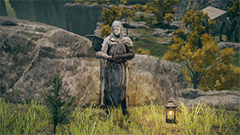
White-Faced Varré
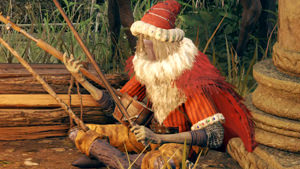
Merchant Kalé
Renna (Ranni'nin Kılığı)
Sorceress Sellen
Blaidd the Half-Wolf
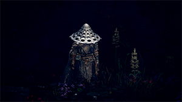
Bloody Finger Hunter Yura
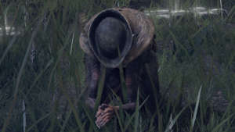
Boc the Seamster
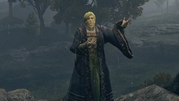
Kenneth Haight
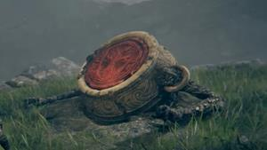
Iron Fist Alexander
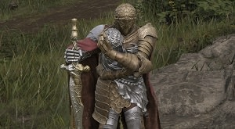
D, Hunter of the Dead
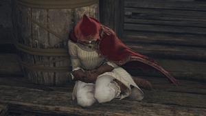
Roderika
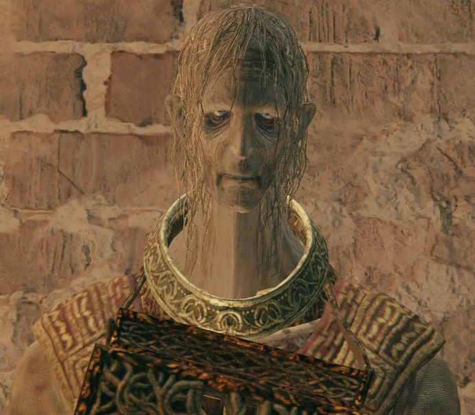
Gatekeeper Gostoc
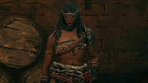
Nepheli Loux
Nomadic Merchants
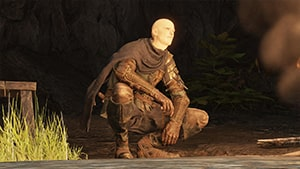
Patches
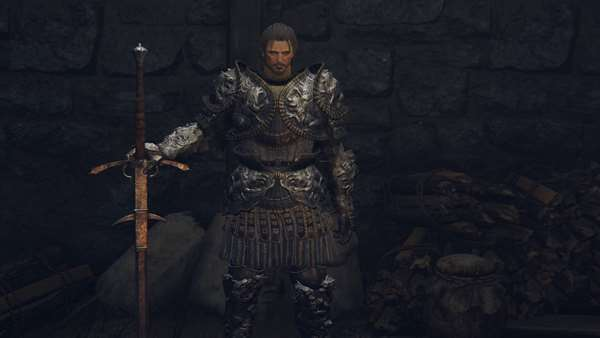
Knight Bernahl
Boss'lar ve Miniboss'lar
Limgrave'de seni bekleyen tüm boss'lar ve karşılaşma yerleri.